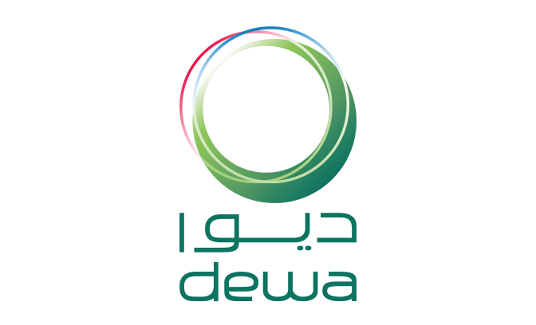
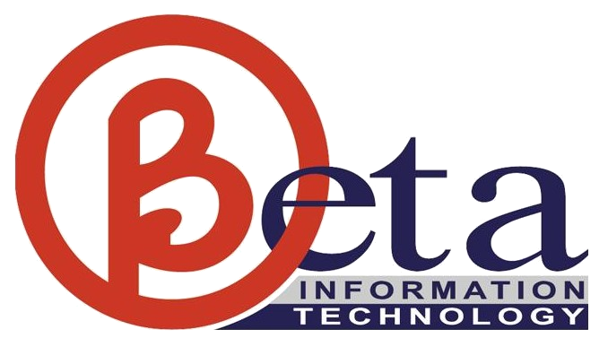

Hi, I'm
Hajara Sabnam.
AI Engineer at Elchai Group and a researcher at heart, with five published papers in machine learning.
- Currently AI Engineer, Elchai Group
- Based in Dubai, UAE
- Education B.Sc. IT, Silver Medalist
- Research 5 papers published
About
I'm a tech enthusiast driven by an insatiable hunger for knowledge, working to build real expertise and a reputation for dedication and hard work.
Today I work as an AI Engineer at Elchai Group, building on research experience from the DEWA R&D Center and published work in machine learning.
When I'm not exploring technology or lost in the pages of a novel, I'm out networking, traveling and embracing new experiences. Let's connect and explore the world together!
Education
-
B.Sc. Information Technology
Amity University Dubai, 2022 to 2025
9.65 CGPA · Silver Medalist
-
High School
New Indian Model School, Dubai, 2020 to 2022
94.4% · CBSE School Second Topper
Toolkit
Off the clock
- Chess
- Drawing
- Painting
- Badminton
Research
Machine learning applied to problems I care about, from coral reefs to clean transport.
5 published · 1 in publishing · 2 in writing · 3 research awards
-
CNN and Transformer-Based Deep Learning Models for Coral Health Classification
Compares ResNet50, EfficientNetB3, ConvNeXt-Tiny and Swin Transformer-Tiny for classifying corals as healthy or bleached from underwater images, using transfer learning on 923 labelled images.
86.33%accuracy with ConvNeXt-Tiny and Swin-Tiny
Read paper -
Symbolic Regression for Unified Descriptor Learning of Geometric and Thermodynamic Stability in Perovskites
Uses symbolic regression to learn a single descriptor that captures both the geometric and the thermodynamic stability of perovskite materials.
-
Tranquil Touch: Smart Gloves for Anxiety Management
A wearable for mental health: smart gloves designed to help people manage anxiety.
Track Winner, AI
IEEE Xplore
MDX Research Competition 2025 -
Predicting CO2 Emissions from Heavy-Duty Vehicles Using XGBoost for Sustainable Transportation in the Supply Chain
An XGBoost model trained on vehicle parameters and real-time operational data that continuously forecasts CO2 output from heavy vehicles in logistics fleets, supporting preventive maintenance.
97.88%prediction accuracy, R² of 0.94
Read paper -
IoT-Driven Real-Time Carbon Emission Monitoring and Optimization for Heavy Vehicles in the Supply Chain
An IoT framework for real-time carbon emission monitoring of road freight, paired with a machine learning model for predictive maintenance.
Track Winner, IT
The story
MDX Research Competition 2024 -
Path Planning for Autonomous Mobile Robots Using A* Algorithm
Enhances the A* algorithm so autonomous mobile robots can navigate complex, dynamic environments, validated with MATLAB simulations.
1st Runner Up
The story
NEXUS 2.0, 2024 -
Machine Learning Framework for Enhancing Handwritten Alphabet Recognition in Education
A machine learning framework for recognising handwritten alphabets, built to support learning in the classroom.
-
Optimizing Handwritten Alphabet Recognition: A Comparative Study of ML Algorithms for Assistive Applications
A comparative study of machine learning algorithms for handwritten alphabet recognition in assistive applications.
Experience
-
AI Engineer
Elchai Group
Present
-

AI & IoT Research Intern
DEWA R&D Center
Feb 2025 to Nov 2025
-

IT Research Intern
Beta Information Technology, Dubai
Jun 2024 to Aug 2024
-
Software Development Intern
Digital Value Stream, Dubai
Jan 2024 to Oct 2024
Moments
Tap a photo to see it larger
Achievements
2025
-
Track Winner in MDX International Undergraduate Student Research Competition 2025
MDX International Undergraduate Student Research Competition 2025, held on January 16, 2025, at Middlesex University Dubai, brought together students from various disciplines to present innovative research under the theme "Human Centric Innovation in the Era of AI" exploring how emerging technologies can be harnessed to enhance human potential, ethical decision-making and inclusive progress. The competition involved abstract submissions, followed by in-person presentations in the finale, where selected students showcased their research.
I was honored to be awarded Track Winner in Track 'Artificial Intelligence' for my research paper, "Tranquil Touch: Smart Gloves for Anxiety Management". Representing Amity University Dubai was an incredible experience, and I am grateful to the organizers and mentors for their support and insights.
-
1st Winner in UAE and 4th Winner in International AI Hackathon II Held During GOTECH 2025
The International AI Hackathon II, held as part of the GOTECH Conference in Dubai, UAE, brought together participants from around the world to develop innovative AI solutions for a specific challenge, "AI Surface Network Production Flow Behaviour Prediction and Optimisation".
Over a three-month development period, we built a model using a Random Forest Regressor combined with time-series forecast visualization to analyze production trends and support data-driven decision-making. The project was recognized as one of the winning solutions, ranking 4th internationally and 1st in the UAE, and we had the opportunity to present our work at the GOTECH Conference. This experience was highly enriching, offering both technical growth and valuable exposure to industry-driven AI applications.
-
Bronze Honour in the International Computer Science Competition 2025
The International Computer Science Competition (ICSC) 2025 was a global, multi-round competition designed to assess core computer science knowledge and problem-solving skills. The competition consisted of three stages, a qualification round, pre-final, and final round covering topics such as neural networks, logic, object-oriented programming, and Python programming.
I qualified through all rounds and reached the final stage, where I ranked among the top 8% of participants worldwide, earning the Bronze Honor Award. This experience strengthened my theoretical foundations and reinforced my interest in competitive problem-solving and applied computer science.
2024
-
Bronze Honour in the International Youth Math Challenge 2024
The International Youth Math Challenge (IYMC) 2024 was a multi-stage global competition consisting of a qualification round, pre-final, and final round. In each round, we had to solve mathematical problems from various topics and different difficulty levels. I advanced through all stages and was awarded the Bronze Honour in the final round, ranking among the top 15% of participants worldwide. This competition strengthened my problem-solving skills and mathematical reasoning across a wide range of topics.
-
Track Winner in MDX International Undergraduate Student Research Competition 2024
MDX International Undergraduate Student Research Competition 2024, held on December 5, 2024, at Middlesex University Dubai, brought together students from various disciplines to present innovative research under the theme "Towards a Sustainable Future," aligned with the UN’s 2030 Agenda. The competition involved abstract submissions, followed by in-person presentations in the finale, where selected students showcased their research.
I was honored to be awarded Track Winner – IT for my research paper, "IoT-Driven Real-Time Carbon Emission Monitoring and Optimization for Heavy Vehicles in the Supply Chain." My research highlighted the overlooked impact of road freight transport on carbon emissions and proposed an IoT-based framework for real-time monitoring, along with a machine learning model for predictive maintenance. Representing Amity University Dubai was an incredible experience, and I am grateful to the organizers and mentors for their support and insights.
-
1st Runner Up in NEXUS 2.0 - A National Level Inter-University Student Research Competition 2024
Nexus 2.0 – National Level Inter-University Student Research Competition 2024, organized by Amity University Dubai, brought together students from various universities to present innovative research across multiple disciplines. Our paper, "Path Planning for Autonomous Mobile Robots Using A* Algorithm" secured the 1st Runner-Up position under Track 3 – Technology Applications in Mechanical, Automation, and Civil Structures.
In collaboration with my co-author, Kareena Mueenuddin, we focused our research on enhancing the A* Algorithm for efficient navigation in Autonomous Mobile Robots (AMRs), particularly in complex and dynamic environments. Through MATLAB simulations, we demonstrated how our approach improved path planning and obstacle avoidance, making AMRs more adaptable to real-world scenarios. This competition was an incredible learning experience, and I am grateful for the opportunity to represent my university.
-
12th NYUAD Hackathon for Social Good in the Arab World
The NYUAD Hackathon for Social Good in the Arab World convened a diverse group of 200 participants from across the globe, selected from a competitive pool of over 1000 applicants. Hosted at New York University Abu Dhabi, the hackathon focused on the intersection of quantum computing and the United Nations Sustainable Development Goals (UNSDGs). With an intensive four-day timeline, participants delved into workshops led by QWorld, gaining insights into quantum cryptography, encryption techniques, and quantum machine learning.
Teaming up with fellow innovators from around the world, my colleagues and I embarked on a mission to develop a cutting-edge solution. Our project centered on creating a web application leveraging quantum computing to predict diabetes, blending quantum machine learning algorithms with advanced encryption methods. Over the course of the hackathon, we worked tirelessly to refine our concept, drawing inspiration from the diverse perspectives and expertise of our team members.
The culminating moment arrived as we presented our project on stage, receiving valuable feedback from mentors and judges. Beyond the accolades, the hackathon provided a transformative experience, showcasing the immense potential of technology to address pressing societal challenges. It was a testament to the power of collaboration and innovation, leaving an indelible mark on my journey of personal and professional growth.
-
Presenter in RTA Dubai's Think Tank Initiative
The Think Tank, hosted by RTA at Birmingham University, was a pivotal event where innovation thrived. Among 12 distinguished teams, our presentation of Enviromove stood out. Enviromove isn't just a tech solution; it's a paradigm shift towards sustainable smart mobility, rooted in citizen-centric principles. Over a span of two intense weeks, our team meticulously crafted Enviromove. The judges' positive feedback affirmed our dedication. This is just the beginning; Enviromove holds immense potential for further development, and our team is committed to realizing it.
2023
-
Track Winner in Unihack 2023 for Climate Action
Unihack 2023 is a global hackathon organized by ProjectSet.
I had participated in the Unihack 2023 individually and won in the Climate Action Track.
It was a 2-week competition, the first round being a poster making round where I had to explain my idea in a well-balanced poster presentation. Upon qualifying this round, for the finale, I had to present my idea as a pitch through a well-put presentation.
Overall, it was a wonderful journey of learning for me. It was insightful, enriching and extremely informative which I am happy to have been a part of.
-
Finalist in Inter-University Business Case Study Competition 2023
Inter-University Business Case Study Competition 2023 was organized by Middlesex University Dubai.
I had participated in the Inter-University Business Case Study Competition with my teammates from the Engineering Department of my university and got qualified to the finals.
The competition delved into various aspects of the Global Ecommerce Market, with special focus on the UAE. The qualifying round had about 5 case study questions about the business and sustainability related aspects of the ecommerce and grocery market. It required hours and days of research for us to arrive at our final answers and fortunately, it was worth the effort as we were one of the 5 teams out of the 63 participated teams that got qualified for finals.
In the final round of the competition, we were provided with a similar set of 5 case study questions revolving around the business sector and ecommerce market and we had to present our solutions through a well-put presentation and pitch ourselves in front of the judges.
It was in itself a huge honour to be a finalist of the Business Case Study Competition with no academic background in business. It was truly a team effort as we sat day and night brainstorming and polishing our solutions.
This experience provided me with valuable insights into the dynamics of the Business World and the Ecommerce Market. As an IT student, this journey has been an incredible learning experience for me, broadening my understanding of the business world and the current trends.
-
Finalist in Inter-University Business Cup Challenge 2023
Inter-University Business Cup Challenge 2023 was a 3 level challenge spanning over 3 weeks organized by Curtin University Dubai.
I had participated in the Inter-University Business Case Study Competition with my teammates from the Engineering Department of my university and got qualified to the finals.
The competition delved into various aspects of the Global Ecommerce Market, with special focus on the UAE. The qualifying round had about 5 case study questions about the business and sustainability related aspects of the ecommerce and grocery market. It required hours and days of research for us to arrive at our final answers and fortunately, it was worth the effort as we were one of the 5 teams out of the 63 participated teams that got qualified for finals.
In the final round of the competition, we were provided with a similar set of 5 case study questions revolving around the business sector and ecommerce market and we had to present our solutions through a well-put presentation and pitch ourselves in front of the judges.
It was in itself a huge honour to be a finalist of the Business Case Study Competition with no academic background in business. It was truly a team effort as we sat day and night brainstorming and polishing our solutions.
This experience provided me with valuable insights into the dynamics of the Business World and the Ecommerce Market. As an IT student, this journey has been an incredible learning experience for me, broadening my understanding of the business world and the current trends.
-
Finalist in RTA Sustainability Hackathon
The RTA Sustainability Hackathon, organized by Unipreneur.inc, RTA Dubai, and GITEX YouthX, was a remarkable event dedicated to innovation. Amidst the energy of the hackathon, our team quickly formed, fueled by a shared passion for sustainable transportation. With two weeks at our disposal, we delved into crafting our solution, guided by the theme of sustainable transportation. The culmination of our efforts resulted in The Green Step, an innovative application promoting walkability and advocating for public transportation usage. Presenting our solution was an exhilarating experience, met with positive feedback from the judges. Participating in the hackathon was not just about competition; it was an opportunity for growth and collaboration, leaving us with invaluable insights and memories.
Let's talk.
Questions, collaborations or just a hello. I'm always open to meeting new people.
hajarasabnam@gmail.com